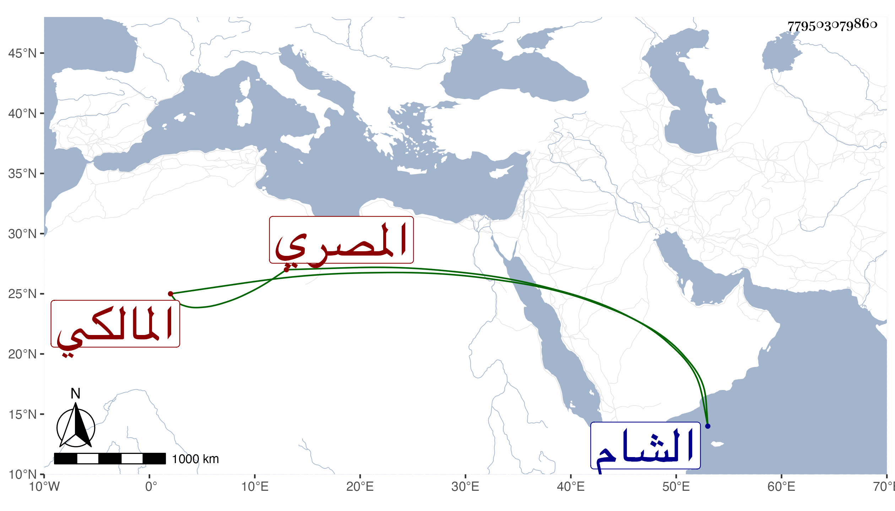

0902Sakhawi.DawLamic.ITO20230111-ara1.EIS1600.779503079860
Biography ID: 779503079860
191
محمد بن محمد بن حسن بن سويد الصدر بن الشمس بن البدر المصري المالكي شقيق عائشة بن أخي الوجيه عبد الرحمن وسبط الجلال البلقيني ، أمه عزيزة ويعرف بابن سويد . ناب في القضاء عن ابن حريز بمنية ابن خصيب واتجر في الرقيق وغيره ، وسافر إلى الشام في التجارة ثم انهبط وصار إلى فقر مدقع حتى مات في أواخر جمادى الأولى سنة تسعين بالمدرسة البلقينية ولم يدفن بها ، وقد جاز السبعين وكان أعور عفا الله عنه .
